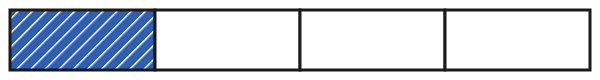
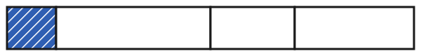

Ein Bruch ist ein Teil eines Ganzen
Mit einem KI-Tutor lernen
Ein KI-Tutor erklärt dir diese Seite und hilft dir bei den Übungen. Wähl deinen Assistenten:
Mit Claude öffnen Mit ChatGPT öffnen Mit Mistral Vibe öffnen
Du nutzt dein eigenes Konto beim Anbieter. Der Assistent ist kein Angebot von lernapps.net: lernapps liefert nur Inhalte und Übungen. Die Wahl gilt für alle Seiten, nur auf diesem Gerät.
Einstieg
Du teilst eine Tafel Schokolade mit drei Freunden. Ihr seid zu viert, und alle bekommen gleich viel. Welcher Teil der Tafel gehört dir? Du bekommst einen von vier gleich großen Teilen, also ein Viertel. Für so einen Teil gibt es eine eigene Schreibweise: den Bruch.
Mit natürlichen Zahlen zählst du ganze Dinge: 1 Tafel, 2 Tafeln. Ein Bruch sagt dir, wie viel von einem Ganzen gemeint ist, zum Beispiel ein Teil einer Tafel.
Anschaulich erklärt
Das Ganze ist hier ein Streifen, wie eine Tafel Schokolade. Er ist in gleich große Teile geteilt. Blau mit Streifenmuster sind die Teile, die du dir gerade ansiehst. Weiß sind die anderen Teile.

Das Ganze ist der ganze Streifen. Schau, wie viele gleich große Teile er hat und wie viele davon blau sind.
Quelle: eigene Zeichnung. Lizenz: CC-BY-4.0.Der blaue Teil ist ein Viertel des Streifens. Man schreibt ihn als Bruch: . Gesprochen: „ein Viertel“. Der waagerechte Strich heißt Bruchstrich.
Unter dem Bruchstrich steht der Nenner. Er sagt, in wie viele gleich große Teile das Ganze geteilt ist, hier 4. Bei 3 gleichen Teilen heißt jeder Teil ein Drittel, bei 5 ein Fünftel, bei 8 ein Achtel.
Über dem Bruchstrich steht der Zähler. Er sagt, wie viele dieser Teile gemeint sind, hier 1.

Auch dieser Streifen hat vier Teile. Vergleiche ihre Breite mit den Teilen des ersten Streifens.
Quelle: eigene Zeichnung. Lizenz: CC-BY-4.0.Hier sind die Teile verschieden groß. Dann ist der blaue Teil kein Viertel, er ist kleiner. Nur gleich große Teile ergeben einen Bruch.
Ausprobieren
Der Streifen ist das Ganze und bleibt immer derselbe. Mit den Knöpfen − und + stellst du ein, in wie viele gleich große Teile er geteilt ist. Das ist der Nenner. Ein Tipp auf ein Teil färbt es blau, ein zweiter Tipp macht es wieder weiß. Die Zahl der blauen Teile ist der Zähler. Wenn du die Teilung änderst, werden alle Teile wieder weiß. Das ist nur zum Ausprobieren, hier wird nichts geprüft. Stelle zum Beispiel ein: erst die Teile, dann die blauen Teile.
Blau: 0 von 1. Das ist der Bruch 0/1.
Ein Streifen ist das Ganze. Du teilst ihn in 1 bis 10 gleich große Teile und färbst einige davon blau. Die Zahl aller Teile ist der Nenner, die Zahl der blauen Teile der Zähler. Beispiel: Ein Streifen aus 8 gleich großen Teilen, 3 davon blau, ist der Bruch 3/8 (drei Achtel).
Merke
- Bruch
Ein Bruch beschreibt einen Teil eines Ganzen, das in gleich große Teile geteilt ist. Man schreibt ihn mit einem Bruchstrich: .
- Nenner
Der Nenner steht unter dem Bruchstrich. Er sagt, in wie viele gleich große Teile das Ganze geteilt ist.
- Zähler
Der Zähler steht über dem Bruchstrich. Er sagt, wie viele dieser Teile gemeint sind.
Pizza
Eine Pizza ist in 8 gleich große Stücke geschnitten. Du isst 3 davon. Welchen Bruch hast du gegessen?
| Das Ganze | eine Pizza |
|---|---|
| Nenner | 8, denn die Pizza hat 8 gleich große Stücke |
| Zähler | 3, denn du isst 3 Stücke |
| Bruch | , gesprochen „drei Achtel“ |
Übung
Übung
Lösung
3/5 richtige Antwort
Der Streifen hat 5 gleich große Teile, das ist der Nenner. Drei davon sind blau, das ist der Zähler.
5/3
Hier stehen Zähler und Nenner vertauscht. Der Nenner steht unten und zählt alle gleich großen Teile des Ganzen.
2/5
Die Zahl im Zähler gehört zu den blauen Teilen. Die weißen Teile sind nicht gemeint.
3/8
Der Nenner zählt alle Teile des Streifens. Zähle sie noch einmal, blaue und weiße zusammen.
Der Nenner sagt, in wie viele gleich große Teile das Ganze geteilt ist. Der Zähler sagt, wie viele davon blau sind.
Mehr dazu:
Übung
Lösung
Richtige Antwort: Die Aussage stimmt nicht.
Ein Bruch braucht gleich große Teile. Sind die Teile verschieden breit, ist keiner davon ein Drittel.
Mehr dazu:
Übung
Drei Beispielaufgaben, jede mit ihrer Lösung:
Aufgabe Nr. 1
Eine Tafel Schokolade hat 7 gleich große Stücke. Du isst 1 davon und schreibst den Anteil als Bruch. Welche Zahl steht unter dem Bruchstrich? Gib nur die Zahl ein.
Tipp
Unter dem Bruchstrich steht, in wie viele gleich große Teile das Ganze geteilt ist.
Lösung
- Das Ganze ist die Tafel. Sie hat 7 gleich große Stücke. Das ist der Nenner.
- Der Nenner steht unter dem Bruchstrich: 7.
Richtige Antwort: 7
Aufgabe Nr. 2
Eine Tafel Schokolade hat 4 gleich große Stücke. Du isst 3 davon und schreibst den Anteil als Bruch. Welche Zahl steht unter dem Bruchstrich? Gib nur die Zahl ein.
Tipp
Unter dem Bruchstrich steht, in wie viele gleich große Teile das Ganze geteilt ist.
Lösung
- Das Ganze ist die Tafel. Sie hat 4 gleich große Stücke. Das ist der Nenner.
- Der Nenner steht unter dem Bruchstrich: 4.
Richtige Antwort: 4
Aufgabe Nr. 3
Eine Tafel Schokolade hat 6 gleich große Stücke. Du isst 2 davon und schreibst den Anteil als Bruch. Welche Zahl steht unter dem Bruchstrich? Gib nur die Zahl ein.
Tipp
Unter dem Bruchstrich steht, in wie viele gleich große Teile das Ganze geteilt ist.
Lösung
- Das Ganze ist die Tafel. Sie hat 6 gleich große Stücke. Das ist der Nenner.
- Der Nenner steht unter dem Bruchstrich: 6.
Richtige Antwort: 6
Übung
Drei Beispielaufgaben, jede mit ihrer Lösung:
Aufgabe Nr. 1
Eine Pizza ist in 11 gleich große Stücke geschnitten. Du isst 1 davon und schreibst den Anteil als Bruch. Welche Zahl steht über dem Bruchstrich? Gib nur die Zahl ein.
Tipp
Über dem Bruchstrich steht, wie viele der gleich großen Teile gemeint sind.
Lösung
- Du isst 1 Stücke. Das ist der Zähler.
- Der Zähler steht über dem Bruchstrich: 1.
Richtige Antwort: 1
Aufgabe Nr. 2
Eine Pizza ist in 6 gleich große Stücke geschnitten. Du isst 1 davon und schreibst den Anteil als Bruch. Welche Zahl steht über dem Bruchstrich? Gib nur die Zahl ein.
Tipp
Über dem Bruchstrich steht, wie viele der gleich großen Teile gemeint sind.
Lösung
- Du isst 1 Stücke. Das ist der Zähler.
- Der Zähler steht über dem Bruchstrich: 1.
Richtige Antwort: 1
Aufgabe Nr. 3
Eine Pizza ist in 10 gleich große Stücke geschnitten. Du isst 8 davon und schreibst den Anteil als Bruch. Welche Zahl steht über dem Bruchstrich? Gib nur die Zahl ein.
Tipp
Über dem Bruchstrich steht, wie viele der gleich großen Teile gemeint sind.
Lösung
- Du isst 8 Stücke. Das ist der Zähler.
- Der Zähler steht über dem Bruchstrich: 8.
Richtige Antwort: 8